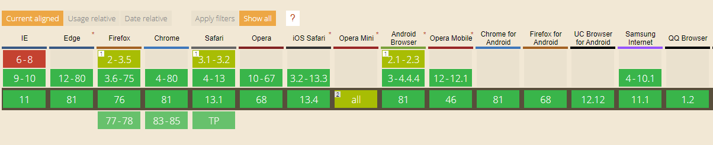

Canvas was developed by Apple in 2004 and was originally intended to display user interface widgets and other pictures in the Mac OS operating system and the Safari browser.
Apple has waived its patent rights on this item under a W3C licensing license that does not require royalties. This means that Apple grants such a license to the Canvas element if the Canvas element is used in accordance with the W3C
HTML guidelines.
Canvas Support

What is canvas?
Canvas is a low-level application programming interface (API) that works in direct mode.
Low-level interface - Canvas provides a “cheap and angry” basic functionality.
For example, any rectangle in it is just a native simple shape. Nevertheless, such concise functionality is easily supplemented with JavaScript scripts.
Direct mode - Canvas drawing commands are executed at the time of invocation.
Unlike SVG (scalable vector graphics), Canvas does not have a direct data structure in which the hierarchy of graphic objects is saved until rendering. This means that graphic operations can be built in the form of an unlimited
number of levels, without negatively affecting the performance of the entire application. Such an organization is great for applications such as raster art packages or programs with other intricate "multi-level" effects.
CANVAS is a regular rectangular area located on the page (this resembles a div element). You can draw the most intricate graphics on the canvas using JavaScript.
Canvas Restrictions
There are limitations when working with canvas. Some of them are due to low level nature of this element.
The absence of data structures for visual elements leads to the fact that you have to create your own objects in JavaScript in order to update the positions and other attributes of non-static graphic elements.
The second point is related to the first: events (for example, mouse clicks) are not applicable to elements drawn on the canvas, since these elements are not independent entities. These elements are just short-term drawing
operations. You need to program such functionality.
To get the most out of Canvas, you need to be very good at JavaScript.
Using
Canvas consists of a drawing area defined in HTML code with height and width attributes. JavaScript code can access the area through a full set of drawing functions similar to other regular 2D APIs, which allows you to dynamically
generate graphics. Some suggested uses for the canvas include graphing, animation, games, and image composition.
A canvas is a rectangular area on an HTML page. By default, the canvas has no borders and content.